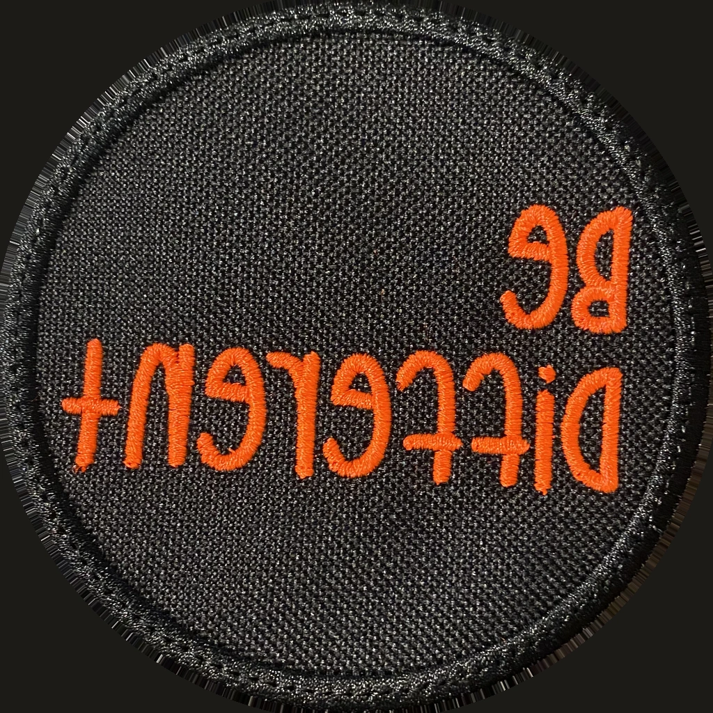
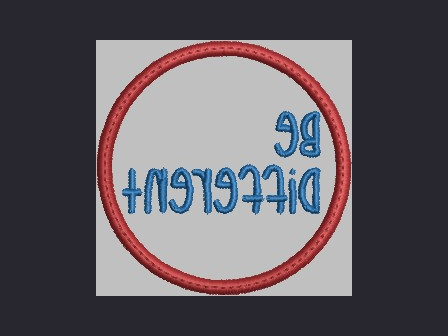
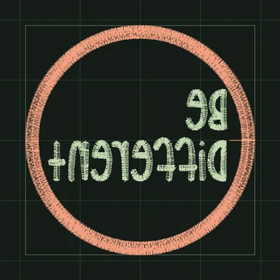
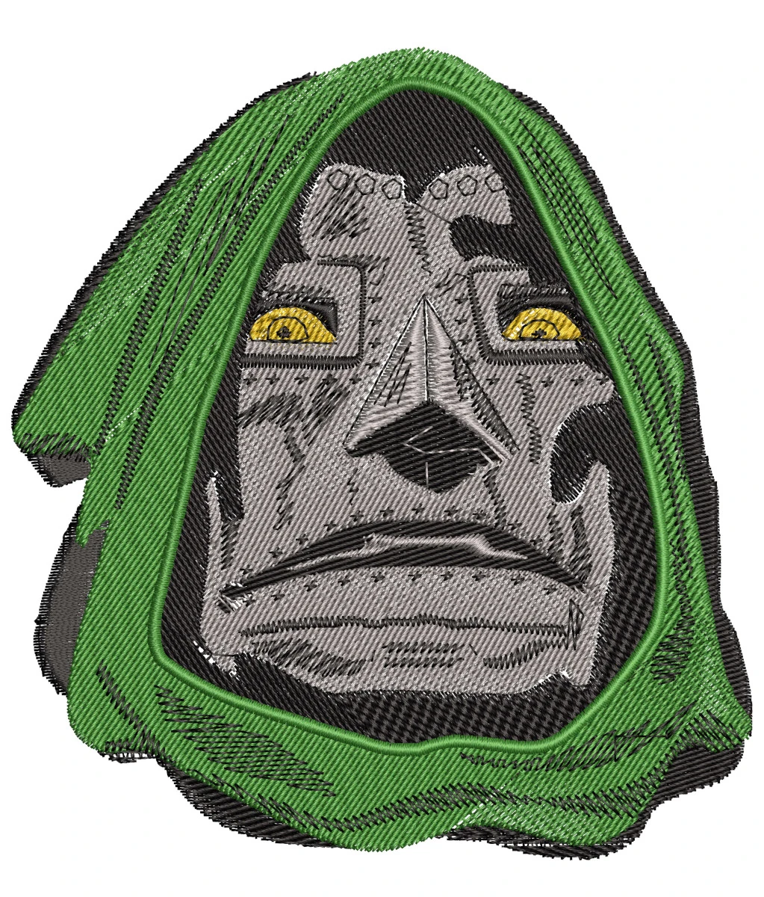
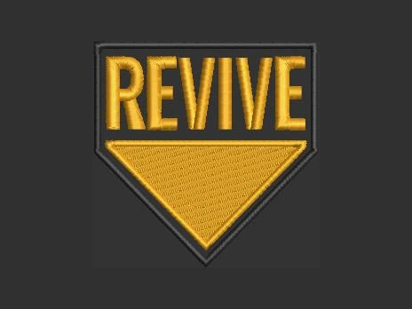

Machine embroidery · Web visualization
Digital to physical
A Hatch preview and a finished patch make it possible to compare stitch texture, edge definition, and contrast across a digital file and a physical object.
- Context
- My Threaded Heart
- My contribution
- Hatch adaptation, patch production and photography
- Media
- Hatch TrueView, 3D inspection and stitch playback
Photo-textured 3D model
Inspect the finished patch
Look closely at the satin lettering and the raised border. The front is textured from the original product photo. The edge and back are modeled.

View from
Drag or use the arrow keys to rotate. Pinch or use the slider to zoom. To pan a close-up, move two fingers together or hold Shift while dragging or pressing an arrow key.
Project gallery
One design, two colorways
This fabrication study follows a sourced motif. The Hatch preview and the finished piece share the circular border and mirrored lettering, with different thread colorways.




Process
Reading the stitch-out
Preview the construction
The Hatch TrueView image shows where the stitched lettering sits in relation to the edge. The archived DST exports record a 76.2 mm edition and a larger edition around 96 mm across. The preview gives me a way to compare the spacing and edge at the intended size before stitching on fabric.
Inspect the physical piece
The production photograph shows a raised edge and a coarse black ground. The bright lettering makes the unusual orientation legible, while the physical edge is where the texture and finish are easiest to see.
Show the surface clearly
A close product image lets a buyer read how the design sits on fabric. The two views here document fabrication and photography for My Threaded Heart.
Machine stitch playback
See how the design stitches
Replay the recorded stitch order. Pause or scrub to inspect a layer before the next one covers it.

Supplied design reference
Doctor Doom face
Compare the face design’s green hood, silver mask and fine details with its machine-file playback above. Doctor Doom is a Marvel character.


File study · Hatch embroidery
Inside a native Hatch file
Revive.EMB is a separate design sample from my Hatch archive. Its embedded TrueView preview shows a gold fill, raised lettering and a dark border.
The EMB keeps the design editable in Hatch. A DST carries the stitch and machine commands used for production.


Embroidery setup study
From file to hoop
The smaller export is 76.2 mm wide, yet its recorded origin is off-center. Place that origin at the center of a 90 × 90 mm stitch field and the left edge falls 4.4 mm outside it. Centering the design envelope gives it 6.9 mm of minimum clearance.